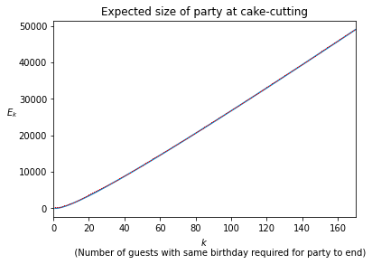
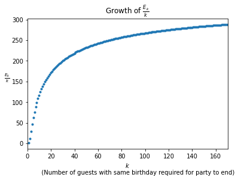

Riddler: How big is your birthday surprise party?
My solution to this week’s riddler. (See more of my Riddler solutions here.)
The Problem
Today I happen to be celebrating the birthday of a family member, which got me wondering about how likely it is for two people in a room to have the same birthday.
Suppose people walk into a room, one at a time. Their birthdays happen to be randomly distributed throughout the 365 days of the year (and no one was born on a leap day). The moment two people in the room have the same birthday, no more people enter the room and everyone inside celebrates by eating cake, regardless of whether that common birthday happens to be today.
On average, what is the expected number of people in the room when they eat cake?
Extra credit: Suppose everyone eats cake the moment three people in the room have the same birthday. On average, what is this expected number of people?
The Solution
For each pair of non-negative integers \(n\) and \(k\), let \(p_{n,k}\) denote the probability that no \(k\) people share a birthday when there are \(n\) guests present. Also define \(E_k\) as the expected number of guests that must arrive for there to be \(k\) people that share a birthday. The first observation that we will make is that
\[ E_k = \sum_{n=0}^\infty p_{n,k}. \]
Indeed, if we define random variables \(X_{n,k}\) as
\[ X_{n,k} = \left\{\begin{array}{ll} 0, & \text{if at least }k \text{ guests share a birthday after }n\text{ guests have arrived}\\ 1, &\text{otherwise}, \end{array}\right. \]
then the total number of guests that have arrived at the first time there is a \(k\)-fold shared birthday is the random variable
\[ X_k = X_{0,k} + X_{1,k} + \cdots + X_{365(k-1),k}. \]
The expected value of this random variable is
\[ \begin{align*} E_k = \operatorname{E}(X_k) &= \sum_{n=0}^{365(k-1)} \operatorname{E}(X_{n,k})\\ &=\sum_{n=0}^\infty p_{n,k} \end{align*} \]
where we note that \(p_{n,k}=0\) whenever \(n>365(k-1)\) (because, by the pigeonhole principle, there must otherwise be at least one day on which at least \(k\) guests share a birthday). Also note that \(p_{0,k}=1\) for every \(k\geq1\) (as there can be no shared birthdays if no guests are present).
Now, the number of distinct ways in which \(n\) guests can arrive such that there is no day on which at least \(k\) of them share a birthday is equal to the number of ordered sequences \[(a_1,a_2,\dots,a_n)\] of numbers \[a_1,\dots,a_n\in\{1,\dots,365\}\] such that no number appears more than \(k-1\) times. The number of such sequences is equal to
\[ \sum_{\substack{k_1,\dots,k_{365}\in\{0,1,\dots,k-1\}\\k_1+k_2+\cdots+k_{365}= n}} \binom{n}{k_1,k_2,\dots,k_{365}} \]
where
\[ \binom{n}{k_1,k_2,\dots,k_{365}} = \frac{n!}{k_1!k_2!\cdots k_{365}!} \]
is the multinomial coefficient. Because there are \(365^n\) ways in which \(n\) guests can arrive in order, the probability that no \(k\) guests share a birthday after \(n\) guests have arrived is
\[ \begin{align*} p_{n,k} &= \frac{n!}{365^n}\sum_{\substack{k_1,\dots,k_{365}\in\{0,1,\dots,k-1\}\\k_1+k_2+\cdots+k_{365}= n}} \frac{1}{k_1!k_2!\cdots k_{365}!} \\ &= \sum_{\substack{k_1,\dots,k_{365}\in\{0,1,\dots,k-1\}\\k_1+k_2+\cdots+k_{365}= n}} \frac{1}{365^{k_1+k_2+\cdots +k_{365}}}\frac{(k_1+k_2\cdots k_{365})!}{k_1!k_2!\cdots k_{365}!}. \end{align*} \]
We now may express the desired expected values as
\[ \begin{align*} E_k &= \sum_{n=0}^\infty \sum_{\substack{k_1,\dots,k_{365}\in\{0,1,\dots,k-1\}\\k_1+k_2+\cdots+k_{365}= n}} \frac{1}{365^{k_1+k_2+\cdots +k_{365}}}\frac{(k_1+k_2\cdots k_{365})!}{k_1!k_2!\cdots k_{365}!}\\ & = \sum_{k_1,\dots,k_{365}\in\{0,1,\dots,k-1\}} \frac{1}{365^{k_1+k_2+\cdots +k_{365}}}\frac{(k_1+k_2\cdots k_{365})!}{k_1!k_2!\cdots k_{365}!}. \end{align*} \]
Making use of the fact that
\[ n! = \int_{0}^\infty t^n e^{-t}\, \mathrm{d}t \]
holds for every non-negative integer \(n\), we may compute the expected values as
\[ \begin{align*} E_k & = \sum_{k_1,\dots,k_{365}\in\{0,1,\dots,k-1\}} \frac{1}{365^{k_1+k_2+\cdots k_{365}}}\frac{1}{k_1!k_2!\cdots k_{365}!} \int_{0}^\infty t^{k_1+k_2+\cdots+k_{365}} e^{-t}\, \mathrm{d}t\\ & = \int_{0}^\infty \sum_{k_1,\dots,k_{365}\in\{0,1,\dots,k-1\}} \left( \frac{\left(\frac{t}{365}\right)^{k_1}}{k_1!} \cdots \frac{\left(\frac{t}{365}\right)^{k_{365}}}{k_{365}!} \right) e^{-t}\, \mathrm{d}t\\ & = \int_{0}^\infty \left( \sum_{n=0}^{k-1} \frac{\left(\frac{t}{365}\right)^{n}} {n!} \right)^{365} e^{-t}\, \mathrm{d}t\\ & = 365\int_{0}^\infty \left(e^{-t}\sum_{n=0}^{k-1}\frac{t^n}{n!}\right)^{365}\, \mathrm{d}t, \end{align*} \]
where the last line follows after making a change of variables in the integration.
Using this formula, we can now compute the expected numbers of guests that have arrived at the first instance when \(k\) people share a birthday for different values of \(k\), the first few values are shown in the table below.
from scipy.integrate import quad
from scipy.special import factorial
def E(k, m=365):
def integrand(t):
out = (sum(np.exp(n*math.log(t) - t) / factorial(n) for n in range(k))) ** m
return out
return quad(integrand, 0, np.inf)| \(k\) | \(E_k\) |
|---|---|
| 1 | 1.0 |
| 2 | 24.6166 |
| 3 | 88.7389 |
| 4 | 187.0518 |
| 5 | 311.4494 |
| 6 | 456.0163 |
| 7 | 616.6169 |
| 8 | 790.2997 |
| 9 | 974.8939 |
| 10 | 1168.7567 |
| 11 | 1370.6135 |
| 12 | 1579.4531 |
| 13 | 1794.459 |
| 14 | 2014.9607 |
| 15 | 2240.3999 |
| 16 | 2470.3065 |
| 17 | 2704.2798 |
| 18 | 2941.9755 |
| 19 | 3183.095 |
| 20 | 3427.3773 |
| 21 | 3674.5931 |
| 22 | 3924.5391 |
| 23 | 4177.0347 |
| 24 | 4431.918 |
| 25 | 4689.0437 |
Below are some plots of these values.


It seems that, in the limit of large \(k\), the ratio of the expected party size to the maximum party size of \(\sim365k\) approaches 1.